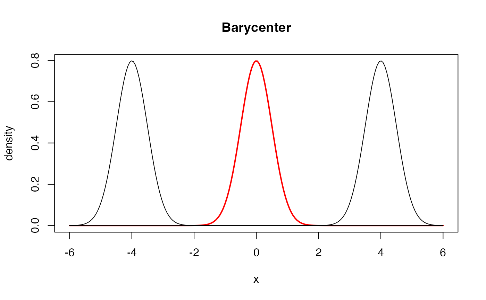

Barycenter of Gaussian Distributions in \(\mathbb{R}\)
gaussbary1d.RdGiven a collection of Gaussian distributions \(\mathcal{N}(\mu_i, \sigma_i^2)\) for \(i=1,\ldots,n\), compute the Wasserstein barycenter of order 2. For the barycenter computation of variance components, we use a fixed-point algorithm by Álvarez-Esteban et al. (2016) .
Arguments
- means
a length-\(n\) vector of mean parameters.
- vars
a length-\(n\) vector of variance parameters.
- weights
a weight of each image; if
NULL(default), uniform weight is set. Otherwise, it should be a length-\(n\) vector of nonnegative weights.- ...
extra parameters including
- abstol
stopping criterion for iterations (default: 1e-8).
- maxiter
maximum number of iterations (default: 496).
Value
a named list containing
- mean
mean of the estimated barycenter distribution.
- var
variance of the estimated barycenter distribution.
References
Álvarez-Esteban PC, del Barrio E, Cuesta-Albertos JA, Matrán C (2016). “A Fixed-Point Approach to Barycenters in Wasserstein Space.” Journal of Mathematical Analysis and Applications, 441(2), 744–762. ISSN 0022247X, doi:10.1016/j.jmaa.2016.04.045 .
Examples
#----------------------------------------------------------------------
# Two Gaussians
#
# Two Gaussian distributions are parametrized as follows.
# Type 1 : (mean, var) = (-4, 1/4)
# Type 2 : (mean, var) = (+4, 1/4)
#----------------------------------------------------------------------
# GENERATE PARAMETERS
par_mean = c(-4, 4)
par_vars = c(0.25, 0.25)
# COMPUTE THE BARYCENTER OF EQUAL WEIGHTS
gmean = gaussbary1d(par_mean, par_vars)
# QUANTITIES FOR PLOTTING
x_grid = seq(from=-6, to=6, length.out=200)
y_dist1 = stats::dnorm(x_grid, mean=-4, sd=0.5)
y_dist2 = stats::dnorm(x_grid, mean=+4, sd=0.5)
y_gmean = stats::dnorm(x_grid, mean=gmean$mean, sd=sqrt(gmean$var))
# VISUALIZE
opar <- par(no.readonly=TRUE)
plot(x_grid, y_gmean, lwd=2, col="red", type="l",
main="Barycenter", xlab="x", ylab="density")
lines(x_grid, y_dist1)
lines(x_grid, y_dist2)

par(opar)